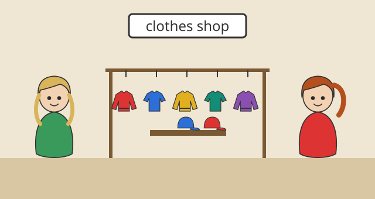
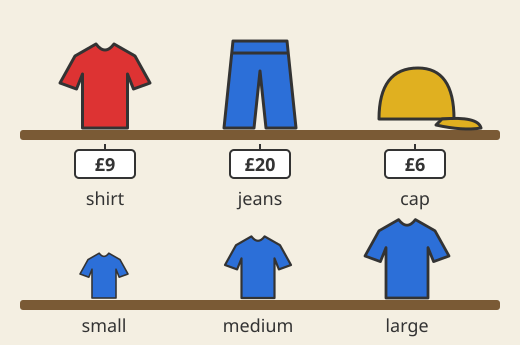

Kleidung kaufen: nach Größe und Preis fragen
Mit einem KI-Tutor lernen
Ein KI-Tutor erklärt dir diese Seite und hilft dir bei den Aufgaben. Wähl deinen Assistenten:
Mit Claude öffnen Mit ChatGPT öffnen Mit Mistral Vibe öffnen
Du nutzt dein eigenes Konto beim Anbieter. Der Assistent ist kein Angebot von lernapps.net: lernapps liefert nur Inhalte und Aufgaben. Die Wahl gilt für alle Seiten, nur auf diesem Gerät.
Im clothes shop

Von links: Sophie (blonde Zöpfe) und Ellie (roter Pferdeschwanz) im clothes shop.
Quelle: eigene Zeichnung. Lizenz: CC-BY-4.0.Peters Mütze ist alt. Sophie möchte ihm eine neue kaufen. Im clothes shop an der High Street gibt es viel Kleidung. Sophie nimmt eine Mütze (cap) und geht zur Verkäuferin, die im Laden arbeitet. How much heißt „wie viel“.
Aufgabe
Lösung
How much is this cap? richtige Antwort
How much heißt wie viel. Mit How much is this …? fragst du nach dem Preis.
What colour is this cap?
colour heißt Farbe. Diese Frage fragt nach der Farbe, nicht nach dem Preis.
Where is this cap?
where heißt wo. Diese Frage fragt nach dem Ort, nicht nach dem Preis.
How much is this cap? heißt Wie viel kostet diese Mütze? So fragst du nach dem Preis.
Das kannst du danach: Ich kann Kleidung benennen und beim Einkaufen nach Größe und Preis fragen.
Kleidung, Preise und Größen
Im Laden brauchst du drei Teile: das Wort für die Kleidung, die Frage nach dem Preis und die Größe. Der Preis steht auf einem Preisschild. Die Verkäuferin fragt dich oft Can I help you? (Kann ich dir helfen?). Wenn etwas nicht passt, sagst du zum Beispiel too small (zu klein). Weitere Kleidungswörter: trainers (Turnschuhe), jacket (Jacke), scarf (Schal). Eine Tasche heißt bag.

Kleidung, Preisschilder und Größen im Laden (eigene Zeichnung).
Quelle: eigene Zeichnung. Lizenz: CC-BY-4.0.Merke
Bei einer Sache fragst du How much is this shirt? und hörst It's nine pounds. Bei mehreren Sachen fragst du How much are these jeans? und hörst They're twenty pounds. Jeans, trousers und shoes gibt es nur in der Mehrzahl, also these und are. Du kannst auch a pair of sagen (a pair of jeans). Ein Preis mit £ heißt pounds, nur bei eins heißt er one pound. Die Größen heißen small, medium und large, nicht „big“. Nach einer anderen Farbe fragst du so: Have you got this in blue? (Have you got heißt „Hast du“ oder „Haben Sie“.)
| Ausdruck | Bedeutung |
|---|---|
| cap | Mütze |
| jumper | Pullover |
| shoes | Schuhe (immer Mehrzahl) |
| medium | mittelgroß |
| a pair of | ein Paar (a pair of jeans heißt eine Jeans) |
Übung
Aufgabe
Lösung
They're eighteen pounds. richtige Antwort
trousers ist die Mehrzahl, also They're. Auf dem Preisschild steht £18, das ist eighteen.
It's eighteen pounds.
trousers gibt es nur in der Mehrzahl. Dazu passt They're, nicht It's.
They're eighty pounds.
eighty ist 80. Auf dem Preisschild steht £18, das ist eighteen.
Die Hosen kosten £18. trousers ist die Mehrzahl, deshalb antwortet die Verkäuferin mit They're eighteen pounds.
Aufgabe
Wähle das richtige Wort für die Frage.
Tipp
Frage dich, ob es eine Sache oder mehrere Sachen sind. Hosen und Schuhe sind immer mehrere.
- Wie viel kostet dieser Pullover? → How much … this jumper?
- Wie viel kosten diese Hosen? → How much … these trousers?
- Wie viel kosten diese Schuhe? → How much … these shoes?
Lösung
- How much is this jumper?
- How much are these trousers?
- How much are these shoes?
Aufgabe
Lösung
Richtige Antwort: 1. Hello. Can I help you?, 2. Yes, please. How much is this bag?, 3. It's nine pounds., 4. Here you are. Thank you.
Die Verkäuferin begrüßt Sophie zuerst und fragt, ob sie helfen kann. Dann fragt Sophie nach dem Preis, die Verkäuferin antwortet, und am Ende bezahlt Sophie und bedankt sich.
Aufgabe
Schreibe in jede Lücke, wie du den Preis sagst.
Tipp
Nur bei der Zahl eins steht pound ohne s. Bei dreizehn und dreißig hilft die Endung.
| Preisschild | So sagst du es |
|---|---|
| £1 | It's one …. |
| £8 | It's … pounds. |
| £13 | It's … pounds. |
| £30 | It's … pounds. |
Lösung
- £1 · It's one pound.
- £8 · It's eight pounds.
- £13 · It's thirteen pounds.
- £30 · It's thirty pounds.
Bei einem Pfund heißt es one pound. Bei allen anderen Zahlen heißt es pounds. Achte auf thirteen (13) und thirty (30).
Aufgabe
Schau auf die Preisschilder im Laden und antworte auf die Frage.
Preisschilder im Laden.
Quelle: eigene Zeichnung. Lizenz: CC-BY-4.0.Tipp
Suche das Kleidungsstück im Bild, lies den Preis und denke an It's oder They're.
- How much are the shoes?
- How much is the jumper?
Lösung
- They're £25. (auch richtig: They're twenty-five pounds.; They are £25.; They are twenty-five pounds.)
- It's £14. (auch richtig: It's fourteen pounds.; It is £14.; It is fourteen pounds.)
Aufgabe
In jedem Satz ist ein Fehler. Schreibe den Satz richtig auf.
Tipp
Prüfe bei jedem Satz die Mehrzahl, das s bei pounds und das Wort für die Größe. Bei My size is big ist die größte der drei Größen gemeint.
- How much is the trainers?
- It's five pound.
- My size is big.
- Peter wants a trousers.
Lösung
- How much are the trainers? (auch richtig: How much are these trainers?)
- It's five pounds. (auch richtig: It is five pounds.)
- My size is large.
- Peter wants a pair of trousers. (auch richtig: Peter wants some trousers.; Peter wants trousers.)
Aufgabe
Schreibe den Satz auf Englisch.
Tipp
Für den Preis brauchst du How much. Beim Preis passt pounds mit s, bei der Hose these.
- Wie viel kostet die Mütze?
- Haben Sie diese Hose in Größe medium?
- Der Pullover ist dreißig Pfund.
Lösung
- How much is the cap? (auch richtig: How much does the cap cost?)
- Have you got these trousers in size medium? (auch richtig: Have you got these trousers in medium?; Do you have these trousers in size medium?; Do you have these trousers in medium?)
- The jumper is £30. (auch richtig: The jumper is thirty pounds.; The jumper costs £30.; The jumper costs thirty pounds.)
Aufgabe
Hör zu und schreibe, was du hörst.
- KI
- KI
- KI
Lösung
- The red dress is twelve pounds today.
- Sophie buys a cap for Peter.
- I would like a pair of trousers. (auch richtig: I'd like a pair of trousers.)
Selbst sagen und schreiben
Aufgabe
Hör zu, sprich nach und nimm dich auf. Vergleiche dann mit dem Original.
Tipp
Hör den Satz zuerst. Sprich dann langsam nach und achte auf is und are.
- How much is the green scarf today?KI
- Have you got a jacket in medium?KI
- These shoes are too small for Ellie.KI
Zum Aufnehmen braucht diese Aufgabe JavaScript. Die Beispiele kannst du auch ohne anhören.
Lösung
- How much is the green scarf today?
- Have you got a jacket in medium?
- These shoes are too small for Ellie.
Offene Aufgabe
Du bist im clothes shop. Schreibe ein kurzes Gespräch mit der Verkäuferin in vier bis sechs Zeilen. Du fragst nach dem Preis eines Kleidungsstücks und nach einer anderen Größe.
Eine gute Antwort enthält:
- Du fragst mit How much is … oder How much are … und wählst is oder are richtig. Nachlesen
- Die Verkäuferin nennt den Preis mit It's … oder They're … pounds. Nachlesen
- Du fragst mit Have you got this in … nach einer Größe oder Farbe, und die Größe heißt small, medium oder large. Nachlesen
- Jeder Satz beginnt mit einem Großbuchstaben und hat am Ende ein Satzzeichen. (Form)
Lösung
Can I help you? – Yes, please. How much are these shoes? – They're twenty pounds. – Have you got them in a larger size? – Yes, here you are. – Thank you.
Weiter in die Ferien
Sophie bezahlt die Mütze. Peter wird sich freuen. In den Herbstferien fahren die Parkers an die Küste. Wohin? Das erfährst du im nächsten Kapitel.
| Du kannst | Beispiel |
|---|---|
| einen Weg beschreiben | Cross the High Street. |
| ein Schild lesen | Open: Tuesday to Sunday, 9:00 to 4:00. |
| beim Einkaufen fragen | How much are these jeans? – They're twenty pounds. |